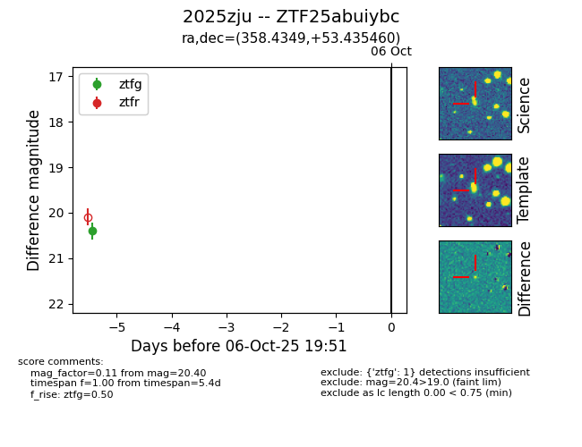

FINK: ZTF25abuiybc
Lasair: ZTF25abuiybc
ALeRCE: ZTF25abuiybc
TNS: 2025zju
YSE: 2025zju
ZTF25abuiybc (ztf,fink)
2025zju (tns,yse)
equatorial (ra, dec) = (358.4349,+53.43546)
galactic (l, b) = (114.3030,-8.46685)

last ztfg=20.40
1 ztfg detections